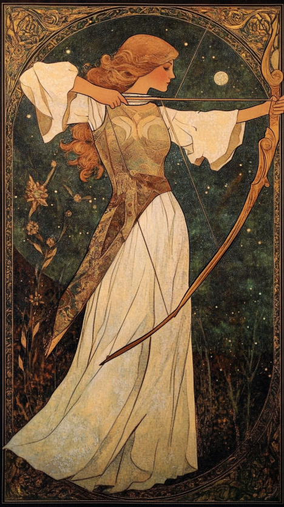

Nome do Jogador: Luiza de Albuquerque
Idade do Jogador: 15
Arqueira (Fio Guiado)
Idade: 22
Altura: 1,67m
Peso: 50kg
Nível: 4
xp: 0
Raça: Elfo Alto
Alinhamento: Neutra / Traidora dos Elfos Altos
Origem: Ruddliah
Eowyn é uma bela jovem da realeza élfica de Ruddliah. Possui rosto de traços delicados, cabelos loiros claros, ondulados e de fio fino. De nariz reto e lábios pequenos, seus olhos possuem uma coloração azulada clara e opaca. Toda sua pele é branca e caracterizada por um tom pálido, associado ao estágio palaciano de sua vida, nas terras nevadas com quase nenhuma exposição ao sol. É vaidosa, por isso, encontra-se utilizando camadas sutis de maquiagem que disfarcem sua palidez, trazendo coloração às bochechas e lábios. Predominantemente, utiliza roupas brancas e com detalhes dourados.
Eowyn Dryadalis, uma jovem princesa entre os Altos Elfos, era reconhecida por sua beleza encantadora e prometida desde cedo a um casamento estratégico. Trancafiada quase toda a vida no palácio por ser considerada traiçoeira e indomável, ela observava o mundo apenas pelas janelas, lançando olhares a possíveis pretendentes e vivendo seus breves romances com forasteiros apenas nos limites do olhar. Seu único contato constante era com membros da corte — entre eles, o excêntrico bobo da corte, Eärendur Círdanor. Conheceram-se quando Eowyn ainda era uma adolescente frustrada com o tédio e a solidão. Eärendur, apesar de não ser um nobre e destoar completamente da formalidade da corte, encantava-a com seu carisma e truques lúdicos. Entre eles não houve romance — mas uma ligação profunda, quase fraterna. Ele despertava nela o lado mais criativo e travesso, que havia sido sufocado pelas exigências da nobreza. Com a costura, por exemplo, Eowyn preferia inventar armadilhas e adereços para suas peripécias, em vez de bordar véus e mantos nupciais. Na véspera de seus quinze anos, quando o casamento se aproximava, Eärendur sugeriu uma brincadeira ousada: roubar temporariamente joias da rainha, escondidas sob a cama, só para ver o caos causado. Riram juntos quando conseguiram realizar o plano com um simples sistema de cordas. O tempo passou e o casamento chegou. O escolhido era um Elfo Alto de sua idade, treinado como estrategista para a guerra contra os vikings. Durante a cerimônia, porém, a rainha — sua mãe — teve espasmos e morreu diante de todos. Atordoada e emocionalmente quebrada, Eowyn mal teve tempo de assimilar a tragédia. Ao fim da festa, encontrou acidentalmente uma cena silenciosa e brutal: seu pai, generais e noivo formavam um semicírculo ao redor de Eärendur, ajoelhado. Seu noivo segurava a espada que lhe tiraria a vida. Sem entender completamente o motivo, Eowyn virou-se de costas e fingiu não ver. Naquela noite, no quarto que agora dividia com o marido, ainda vestindo o rasgado vestido de noiva, usou os fios soltos da roupa para montar uma armadilha com as técnicas que o bobo havia lhe ensinado. Com uma pequena adaga, cortou a garganta do recém-esposo — vingança silenciosa em nome de seu único e verdadeiro amigo. Fugiu do castelo por rotas secretas que conhecia desde a infância. Na floresta, encontrou algo improvável: uma caixa de presente colorida e discreta. Ao abri-la, confetes explodiram em sua face. Soube de imediato quem a deixara ali. Dentro estavam um baralho de truques, um pequeno espelho, luvas que ela mesma havia costurado para ele, e as roupas coloridas manchadas de sangue que Eärendur usava no dia de sua execução. Ao fundo, joias de prata — provavelmente aquelas da rainha. Ela pegou tudo, menos as joias, que escondeu novamente. Com retalhos das roupas do amigo, costurou adornos em seu próprio vestido, prometendo a si mesma nunca perder a essência da infância, nem deixar que os padrões da corte lhe roubassem a leveza. A partir dali, passou a viver entre as árvores, vagando por vilas e campos. Encantava elfos comuns com sua beleza e charme, enganando e seduzindo para sobreviver. Passou a vida como queria — livre, traiçoeira, sorridente — roubando moedas, espalhando informações, e fazendo o que jamais poderia dentro das paredes do castelo.
+0
+9
+8
+0/10
+0
10/10
Arco Simples
Dano: 2D2 4kg 60D$
Armadura de couro
20res, 5kg, 50D$
0
Baralho de Truques
Presente de Eärendur
Luvas Costuradas
Presente de Eärendur
Kit de Costura
Usado para criar armadilhas
Flechas de aço (20)
Flechas de aço comuns ( 1D5, 20D$ )